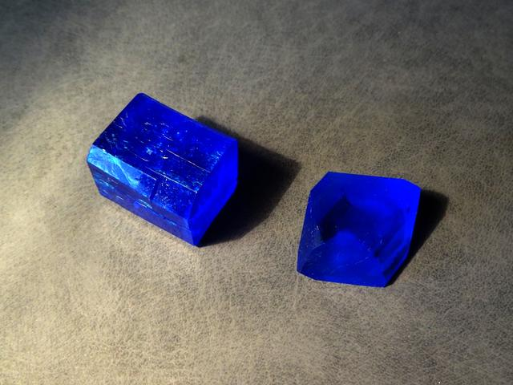
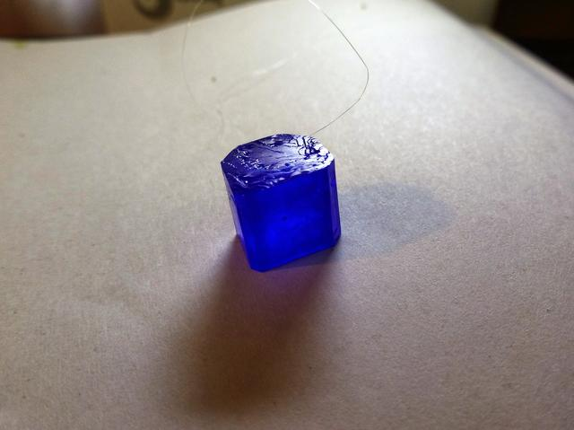

Calcium Copper Acetate
Formula: CaCu(CH3COO)4·6H2O. Calcium copper acetate is on the left; crystal on the righs is copper sulfate. 
{kind=link}
Properties
- Crystal system: tetragonal
- Crystal shape: straight octagonal prism
- Stability on air: stable
- Color: blue
Preparation
The chemicals to grow the above crystals can be prepared from widely available compounds: vinegar, chalk and copper sulphate.
The easiest one is calcium acetate Ca(CH3COO)2. I have obtained it by treating white chalk (main component is calcium carbonate CaCO3) with acetic acid. In this reaction, large amount of CO2 gas is released, so don't put all chalk at once, or the foam will spill from the flask. The equation of this reaction is:
CaCO3 + 2CH3COOH → Ca(CH3COO)2 + H2O + CO2(g)
Copper II acetate Cu(CH3COO)2 is a bit harder to make. I've made it electrochemically, by dissolving copper anode in acetic acid. An easier way would be the following 2-step reaction, starting from copper (II) sulphate CuSO4.
First, dissolve some CuSO4 in water and add baking soda NaHCO3. Sodium carbonate or hydroxide are fine too. Again, CO2 gas will release (beware of foam), and green-blue sediment of the basic copper (II) carbonate will form:
2CuSO4 + 2NaHCO3 → CuCO3·Cu(OH)2(s) + Na2SO4 + CO2(g)
Let the sediment to precipitate, remove excess of the liquid, then dissolve the sediment it in the acetic acid:
CuCO3·Cu(OH)2 + 4CH3COOH → 2Cu(CH3COO)2 + 2H2O + CO2(g)
You will obtain blue solution of the copper (II) acetate. Again, carbon dioxide gas would form, so don't add a lot of acid at once. In case you are getting dark-blue precipitate, add more water: copper acetate has relatively low solubility in water.
Growing
Important point on this compound: it won't crystallize from a solution, containing stoichiometric amounts of Ca and Cu acetates. From such solution, copper acetate will crystallize first. This is probably caused by very low solubility of the latter.
Double copper-calcium acetate will crystallize, if solution contain Ca and Cu ions in at least 4:1 ratio.
I've made the solution by dissolving dried acetates of copper and calcium in hot water, in proportion 7.2g of calcium acetate per 2g of copper acetate. If the solution was concentrated enough, then after cooling it, light blue crystals of double salt copper-calcium acetate will form spontaneously. If you instead see dark-blue crystals of copper acetate, the, calcium is probably not enough. If you don't have any crystals, then there is too much water, let it evaporate in the warm place.
Growing method was the usual slow evaporation. 
{kind=link}
Safety
Copper compounds are mildly toxic.
{kind=link}
{kind=link}
{kind=link}